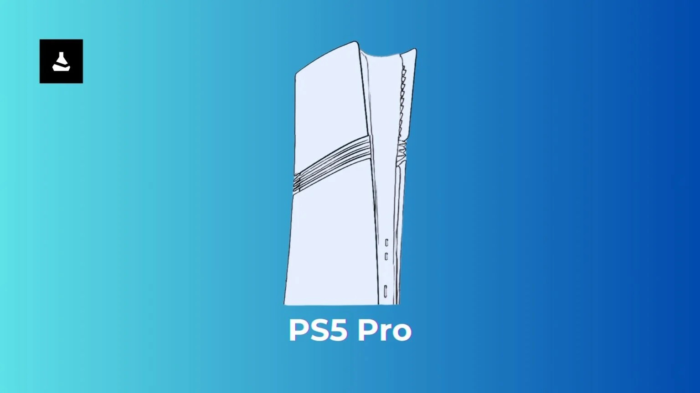

Filtran el PlayStation 5 Pro: revelan diseño, nombre oficial, modelos y
posible fecha de presentación de la nueva consola de Sony.
Una de las fuentes más confiables de la industria reveló detalles del
rumorado hardware.
El PlayStation 5 Pro es un secreto a voces desde hace varios meses. Reportes
recientes afirman que la
revelación de la nueva consola de Sony es inminente; sin embargo, la compañía sigue en silencio
respecto a
su rumorado hardware.
Todo indica que la presentación del sistema realmente ya viene en camino, pues una de las fuentes más
confiables de la industria filtró detalles importantes sobre él. Gracias a esto, sabemos cómo será su
diseño
oficial, conocemos su nombre, información sobre sus modelos y una posible fecha para su revelación.
¿Cómo será y cuándo será revelado el PlayStation 5 Pro?
Por medio de Dealabs, el filtrador con mejor reputación de la industria reveló
interesantes detalles sobre
el PlayStation 5 Pro. Nos referimos a billbil-kun, quien tiene un historial de
filtraciones impecable, pues
no ha fallado en ninguna ocasión. Por tal motivo, su reporte llamó la atención de todos los jugadores.
De acuerdo con sus fuentes, Sony no se rompió la cabeza para elegir el nombre de su nueva consola, pues se
llamará simplemente PlayStation 5 Pro, tal como muchos esperaban. Lo más llamativo de su reporte es que
reveló cómo será la nueva consola de Sony.
El filtrador compartió un boceto dibujado a partir de la imagen que se mostrará en la parte frontal de la
caja de la consola. El sistema conserva el diseño del PS5 estándar y Slim; sin embargo, es un poco más
ancho
y sus carcasas blancas tendrán 3 líneas negras en el centro.

BOCETO DEL DISEÑO OFICIAL DEL PLAYSTATION 5 PRO
La fuente intuye que la consola será compatible con las carcasas del PS5 Slim; sin
embargo, no está confirmado. También reveló que la nueva consola Pro tendrá 2 puertos USB-C y el botón
de encendido en la parte frontal.
En cuanto a los modelos que tendrá el sistema, billbil-kun aún tiene dudas, pues sólo tuvo acceso a la
caja de un PlayStation Pro sin unidad de disco. Pese a esto, la existencia de un modelo con unidad de
disco es una posibilidad. Sony también podría apostar por un modelo con unidad de disco desmontable.
Por otro lado, el reporte revela que la consola vendrá acompañada del DualSense blanco estándar que
todos conocemos, por lo que no habrá novedades en este apartado. Por último, tenemos la información
sobre su posible fecha de revelación.
El filtrador asegura que la presentación oficial de PlayStation 5 Pro es inminente, pues se llevaría a
cabo en la primera mitad de septiembre. Rumores aseguran que Sony prepara un evento para estas
fechas,
así que es probable que muy pronto conozcamos el sistema.
¿Qué más se sabe sobre PlayStation 5 Pro?
El reporte reciente no revela ningún detalle técnico sobre la próxima consola de Sony.
Sin embargo, filtraciones anteriores revelaron que, supuestamente, el hardware tendrá la misma CPU que
un PS5 estándar; sin embargo, contará con un nuevo modo para ofrecer un aceleramiento de aproximadamente
10%. Los estudios podrán elegir entre usar el modo normal a 3.5 GHz o la modalidad a alta frecuencia de
3.85 GHz.
Además, se reveló que los estudios tendrán acceso a 1.2 GB más de memoria del sistema en general. Así
que ahora podrán usar 13.7 GB para sus juegos en lugar de los 12.5 GB actuales. Por último, se habló de
la presencia de la llamada PlayStation Spectral Super Resolution (PSSR), tecnología de escalado que
promete resultados similares a los del Deep Learning Super Sampling (DLSS) de Nvidia.